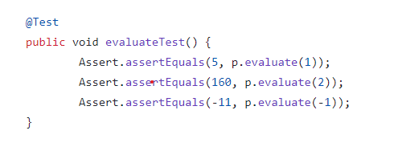

Unit testing is a process that is used to test a class while it is being written. JUnit is used to write test classes to check the methods of another class for proper functionality. It checks if the output being produced is correct. Multiple tests are written as methods in the test class, and each test should have one or more assertions.
Assertions are statements that evaluate to either true or false based on whether the output of a method matches its expected value. If the method call's return value is equal to the expected value for what the method should return, the assertion evaluates to true. Otherwise, if it does not match, then the assertion evaluates to false.
Here is an example of assertions being used to test a method.
